Chapter 9 Exploratory Data Analysis
We are going to use what we have learned so far to do exploratory data analysis. It is also a practice for data manipulation and visualization.
Instead of importing dplyr and ggplot2, we import tidyverse this time. tidyverse includes both dplyr and ggplot2. Besides, it also has some other useful packages, such as tidyr (data manipulation) and stringr (dealing with characteristics and string data).
library(tidyverse)## -- Attaching packages --------------------------------------- tidyverse 1.3.0 --## v ggplot2 3.3.3 v purrr 0.3.4
## v tibble 3.0.5 v dplyr 1.0.3
## v tidyr 1.1.2 v stringr 1.4.0
## v readr 1.4.0 v forcats 0.5.0## -- Conflicts ------------------------------------------ tidyverse_conflicts() --
## x dplyr::filter() masks stats::filter()
## x dplyr::lag() masks stats::lag()9.1 Case 1: Race and personal income in the city of Minneapolis (2010-2019)
The data we have is the Minneapolis ACS dataset. You need to download the DDI file (xml file) and the dataset (DAT file) before dealing with the data.
Then you can use the code below to import the dataset.
## import the ipumsr package
library(ipumsr)
## import dataset
ddi <- read_ipums_ddi('usa_00003.xml') ## you may need to change the file name
data <- read_ipums_micro(ddi)After importing the dataset, usually you have to do some pre-processing before exploring the data. Below are some examples:
1. Remove the labels. The IPUMS dataset has labels. In this lecture, you may want to remove them.
2. Select some observations for further analysis.
3. Reduce the levels of some categorical variables. RACE originally has 9 levels. Here, we only keep the codes for White and African American and aggregate other races to one level.
4. Change the missing value to NA. Some survey data use codes such as 9999, 999998 to stand for missing values. We may need to change those to NA.
5. Select the variables for further analysis.
minneapolis <- data %>%
zap_labels() %>% ## remove labels from the data
filter(CITY == 4150) %>% ## select the city of Minneapolis (city code is 4150)
mutate(RACE = ifelse(RACE >= 3, 3, RACE), ## select three racial groups
INCTOT = ifelse(INCTOT == 9999999, NA, INCTOT), ## change missing value to NA
FTOTINC = ifelse(FTOTINC %in% c(9999999, 999998), NA, FTOTINC)) %>%
select(YEAR, SEX, AGE, RACE, HISPAN, EDUC, EMPSTAT, INCTOT, FTOTINC) ## select variablesI skip the variable introduction as we have been very familiar with them. You may find the variable introduction by this link.
The codes below calculate the personal income for each racial group from 2010 to 2019.
minneapolis_race <- minneapolis %>%
group_by(YEAR, RACE) %>% ## calculate average personal income for races and years
summarise(AvgInc = mean(INCTOT, na.rm = T)) %>%
mutate(RACE = case_when( ## change race from numbers to their corresponding labels
RACE == 1 ~ 'White',
RACE == 2 ~ 'African American',
RACE == 3 ~ 'Other'
))
head(minneapolis_race, 10)## # A tibble: 10 x 3
## # Groups: YEAR [4]
## YEAR RACE AvgInc
## <int> <chr> <dbl>
## 1 2010 White 42938.
## 2 2010 African American 18596.
## 3 2010 Other 21891.
## 4 2011 White 42889.
## 5 2011 African American 19054.
## 6 2011 Other 19940.
## 7 2012 White 38157.
## 8 2012 African American 17045.
## 9 2012 Other 22724.
## 10 2013 White 43206.The codes below draw a line plot to show the results.
ggplot(minneapolis_race, aes(YEAR, AvgInc, color = RACE)) + ## line plot
geom_line() +
geom_point()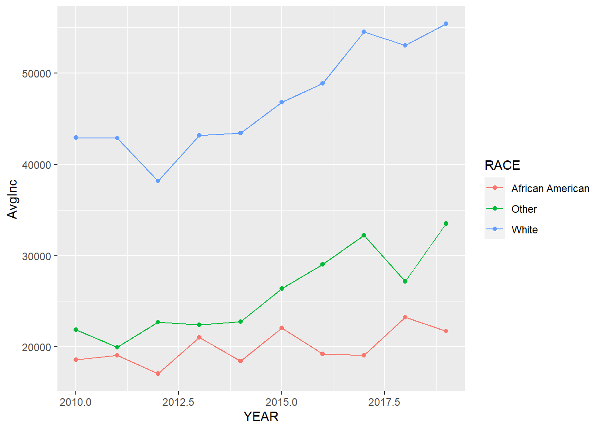 We may need to make it more readable to the audience by adding more elements and change the font size of some texts.
ggplot(minneapolis_race, aes(YEAR, AvgInc, color = RACE)) + ## line plot
geom_line() +
geom_point() +
labs(x = 'Year',
y = 'Average personal income (Dollars)',
color = 'RACE',
title = 'Race and personal income in Minneapolis (2010-2019)') +
scale_x_continuous(breaks = c(2010:2019)) + ## adjust x axis tick labels
theme_bw() +
theme(legend.position = 'bottom', ## adjust legend position
axis.text = element_text(size = 10), ## adjust font sizes for different components
axis.title = element_text(size = 12),
plot.title = element_text(size = 14),
legend.text = element_text(size = 10),
legend.title = element_text(size = 10))
Finally, we can combine the data manipulation and visualization codes together.
## line plot of the relationships between race and income
minneapolis %>%
group_by(YEAR, RACE) %>% ## calculate average personal income for races and years
summarise(AvgInc = mean(INCTOT, na.rm = T)) %>%
mutate(RACE = case_when( ## change race from numbers to their corresponding labels
RACE == 1 ~ 'White',
RACE == 2 ~ 'African American',
RACE == 3 ~ 'Other'
)) %>%
ggplot(aes(YEAR, AvgInc, color = RACE)) + ## line plot
geom_line() +
geom_point() +
labs(x = 'Year',
y = 'Average personal income (Dollars)',
color = 'RACE',
title = 'Race and personal income in Minneapolis (2010-2019)') +
scale_x_continuous(breaks = c(2010:2019)) + ## adjust x axis tick labels
theme_bw() +
theme(legend.position = 'bottom', ## adjust legend position
axis.text = element_text(size = 10), ## adjust font sizes for different components
axis.title = element_text(size = 12),
plot.title = element_text(size = 14),
legend.text = element_text(size = 10),
legend.title = element_text(size = 10))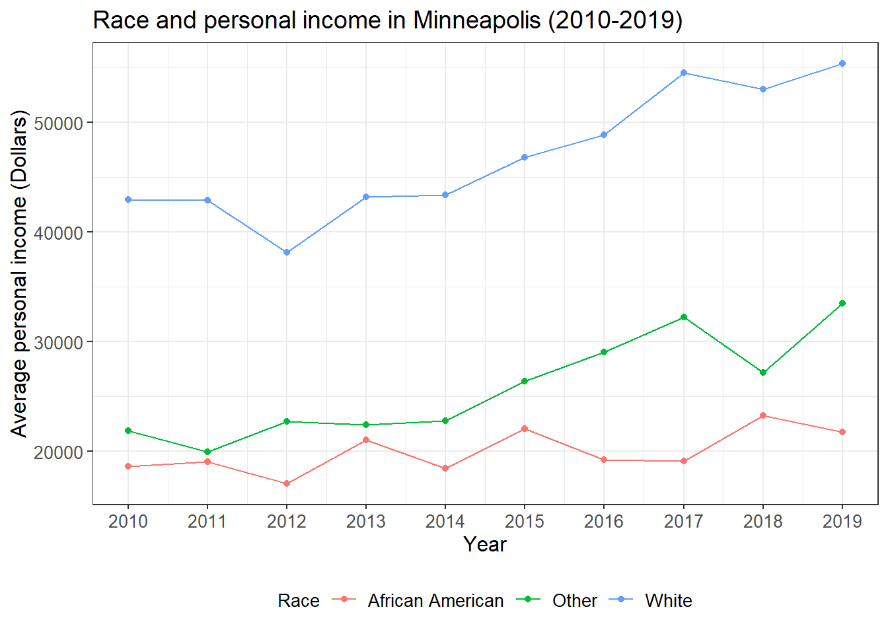
From this plot, we see that the personal income of minority groups are much lower than that of the White. In addition, the personal income of the African Americans are relatively stable during the study time period and has increased very little.
You may want to save the plot.
ggsave('race_income.jpg', width = 8, height = 6, dpi = 600) ## save the plot9.2 Case 2: Race and employment rate in the city of Minneapolis (2010-2019)
In the second case, we see how programming in R help increase work efficiency. The problem in case 2 is quite similar to that in the first case. Therefore, we only need to change the codes in case 1 a little bit and then we can have the result.
## line plot of the relationship between race and employment status
minneapolis %>%
group_by(YEAR, RACE, EMPSTAT) %>% ## calculate average employment rate for races and years
summarise(count = n()) %>%
filter(EMPSTAT != 0, EMPSTAT != 3) %>%
group_by(YEAR, RACE) %>%
mutate(per = count/sum(count)*100) %>%
filter(EMPSTAT == 1) %>%
mutate(RACE = case_when( ## change race from numbers to their corresponding labels
RACE == 1 ~ 'White',
RACE == 2 ~ 'African American',
RACE == 3 ~ 'Other'
)) %>%
ggplot(aes(YEAR, per, color = factor(RACE))) + ## line plot
geom_line() +
geom_point() +
labs(x = 'Year',
y = 'Average employment rate (%)',
color = 'RACE',
title = 'Race and employment rate in Minneapolis (2010-2019)') +
scale_x_continuous(breaks = c(2010:2019)) +
scale_y_continuous(limits = c(70, 100),
breaks = c(75, 80, 85, 90, 95, 100)) +
theme_bw() +
theme(legend.position = 'bottom', ## adjust legend position
axis.text = element_text(size = 10), ## adjust font sizes for different components
axis.title = element_text(size = 12),
plot.title = element_text(size = 14),
legend.text = element_text(size = 10),
legend.title = element_text(size = 10))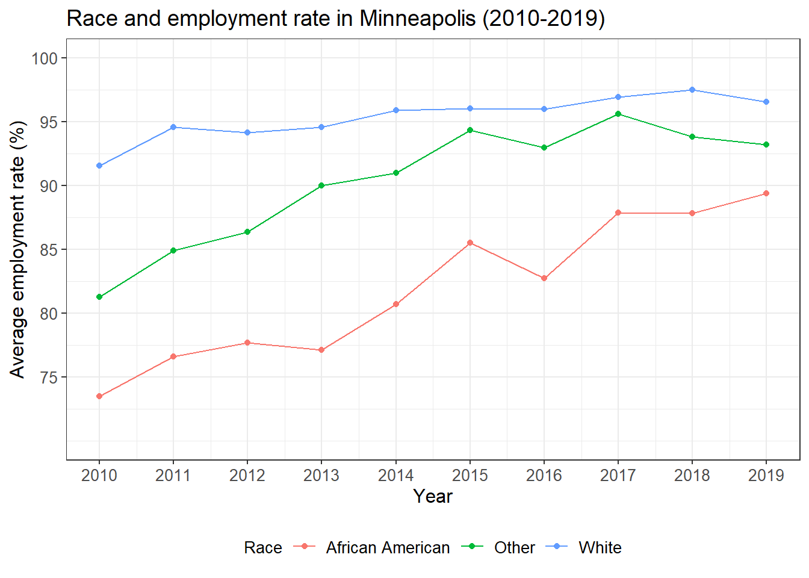
We see that the employment rate of the minority groups have been improved a lot during the study period, especially for African Americans. However, the minority groups have relatively lower employment rate than the White.
9.3 Case 3: Population density and election result in the US (2020)
We first import the dataset we need. Population density at the county level is retrieved from the US Census Bureau (link). Election results at the county level is retrieved from a GitHub repo (link).
pop_density <- read_csv('pop_density.csv')
election <- read_csv('2020_election.csv')We, then,
- Join the population density dataset to the election result dataset. The variable used to join two datasets is the ID of each county. In the population density dataset, it is
GEOID. In the election result dataset, it iscounty_fips.
- Select two variables from the dataset.
per_point_diffis the difference between the vote share for Trump and that for Biden.
- Select observations without missing values.
- Rename the two variables.
election %>%
left_join(pop_density, by = c('county_fips'='GEOID')) %>% ## join two datasets
select(per_point_diff, B01001_calc_PopDensity) %>% ## select two variables
filter(complete.cases(.)) %>% ## select observations without missing values
rename(diff = per_point_diff, ## rename the variables
popden = B01001_calc_PopDensity) %>%
head()## # A tibble: 6 x 2
## diff popden
## <dbl> <dbl>
## 1 0.444 35.9
## 2 0.538 50.5
## 3 0.0766 11.2
## 4 0.577 14.0
## 5 0.800 34.5
## 6 -0.499 6.42We draw a simple scatter plot to see the distribution of the two variables. It seems that the x axis need some transformation based on the distribution. Note that we map -diff to the x axis instead of mapping diff directly.
election %>%
left_join(pop_density, by = c('county_fips'='GEOID')) %>%
select(per_point_diff, B01001_calc_PopDensity) %>%
filter(complete.cases(.)) %>%
rename(diff = per_point_diff,
popden = B01001_calc_PopDensity) %>%
ggplot(aes(popden, -diff)) + ## simple scatter plot
geom_point()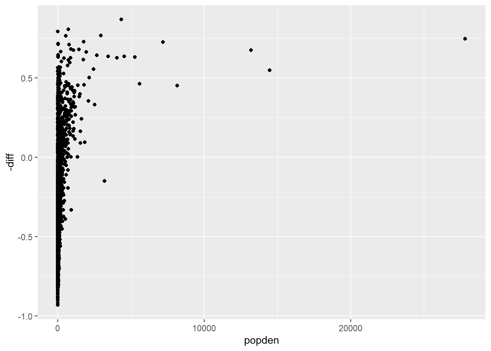
We transform the x axis with logarithm through scale_x_log10(). The plot looks much better.
election %>%
left_join(pop_density, by = c('county_fips'='GEOID')) %>%
select(per_point_diff, B01001_calc_PopDensity) %>%
filter(complete.cases(.)) %>%
rename(diff = per_point_diff,
popden = B01001_calc_PopDensity) %>%
ggplot(aes(popden, -diff)) +
geom_point() +
scale_x_log10() ## transform the x axis with logarithm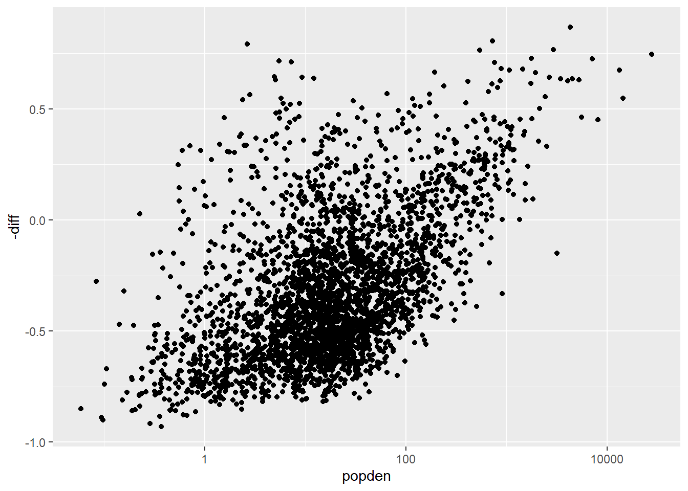
Below are some steps to further improve the plot.
- Map
popdento the size of the points.
- Create a variable
party. When its value is 0, it means Trump won that county. When its value is 1, it means Biden won that county. Map this variable to the color of the points. Usescale_fill_manual()to set the color for each value ofparty: red for 0 and blue for 1.
- Set the shape of the point to 21 and set the border color as white.
- Set the ticks of the x axis and y axis to specific values.
- Set the range of y axis.
- Add a horizontal line at 0 with
geom_hline().
- Change the labels of x axis, y axis, and title.
- Add the complete theme
theme_bw(). - Remove the legend.
- Set the font size for axis labels and title.
election %>%
left_join(pop_density, by = c('county_fips'='GEOID')) %>%
select(per_point_diff, B01001_calc_PopDensity) %>%
filter(complete.cases(.)) %>%
rename(diff = per_point_diff,
popden = B01001_calc_PopDensity) %>%
mutate(party = ifelse(diff > 0, 0, 1)) %>% ## create a variable
ggplot(aes(popden, -diff, size = popden, fill = factor(party))) + ## map population density to size and party to fill of the points
geom_point(shape = 21, color = 'white') + ## change the shape of the point and set the border color to white
scale_fill_manual(values = c('red', 'blue')) + ## set the color for party
scale_x_log10(breaks = c(0.1, 1, 10, 100, 1000, 10000), ## set the ticks for x axis
labels = c('0.1', '1', '10', '100', '1000', '10000')) +
scale_y_continuous(limits = c(-1, 1), ## set the color for y axis
breaks = c(-1, -0.5, 0, 0.5, 1),
labels= c('-100', '-50', '0', '50', '100')) +
geom_hline(yintercept = 0) + ## add a horizontal line at 0
labs(title = 'Election result and population density in US (2020)', ## change labels
x = 'Population density (people/sq km)',
y = 'Vote margin (%)') +
theme_bw() +
theme(legend.position = 'none', ## remove legend
axis.text = element_text(size = 10), ## adjust font size for different components
axis.title = element_text(size = 12),
plot.title = element_text(size = 14))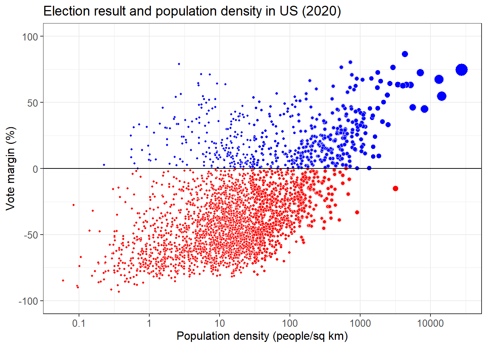
What can you learn from this plot about the relationship between election result and population density?
9.4 Case 4: Factors that influence students’ performance
The dataset is from this link. This dataset includes scores from three exams and several demographic variables. We want to check the factors that could influence students’ performance with a simple regression model.
performance <- read_csv('StudentsPerformance.csv')An overall view of the dataset.
str(performance)## tibble [1,000 x 8] (S3: spec_tbl_df/tbl_df/tbl/data.frame)
## $ gender : chr [1:1000] "female" "female" "female" "male" ...
## $ race/ethnicity : chr [1:1000] "group B" "group C" "group B" "group A" ...
## $ parental level of education: chr [1:1000] "bachelor's degree" "some college" "master's degree" "associate's degree" ...
## $ lunch : chr [1:1000] "standard" "standard" "standard" "free/reduced" ...
## $ test preparation course : chr [1:1000] "none" "completed" "none" "none" ...
## $ math score : num [1:1000] 72 69 90 47 76 71 88 40 64 38 ...
## $ reading score : num [1:1000] 72 90 95 57 78 83 95 43 64 60 ...
## $ writing score : num [1:1000] 74 88 93 44 75 78 92 39 67 50 ...
## - attr(*, "spec")=
## .. cols(
## .. gender = col_character(),
## .. `race/ethnicity` = col_character(),
## .. `parental level of education` = col_character(),
## .. lunch = col_character(),
## .. `test preparation course` = col_character(),
## .. `math score` = col_double(),
## .. `reading score` = col_double(),
## .. `writing score` = col_double()
## .. )The names of some variables are very long. So we firstly rename these variables.
performance <- performance %>%
rename(race = `race/ethnicity`,
pedu = `parental level of education`,
pre = `test preparation course`,
math = `math score`)Gender and math score.
performance %>%
ggplot(aes(gender, math)) +
geom_boxplot()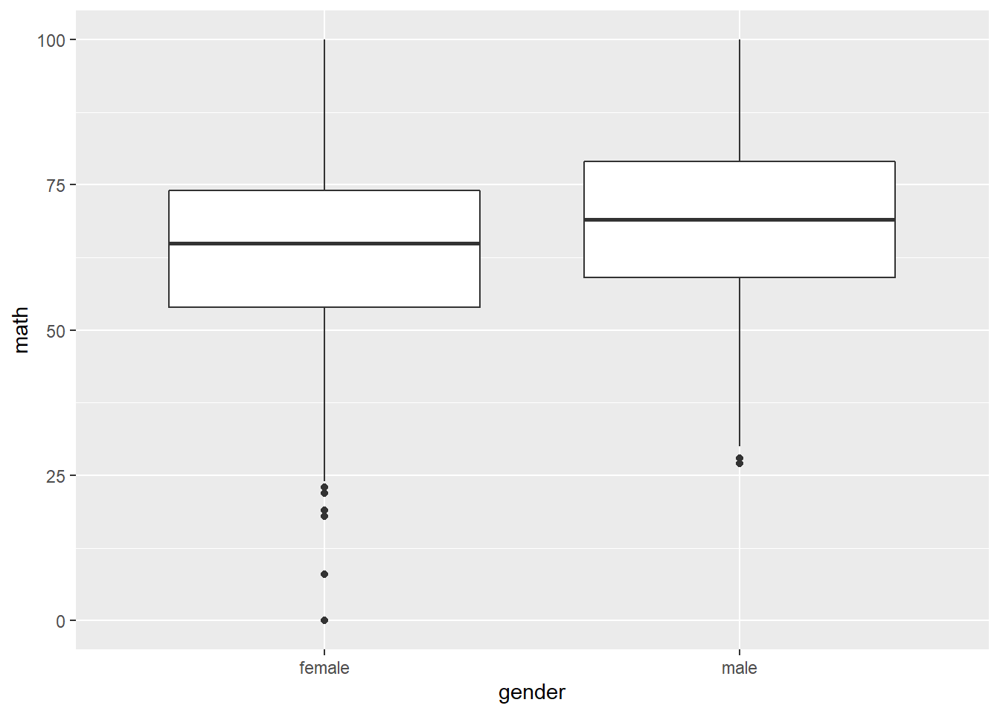
Race and math score.
performance %>%
ggplot(aes(race, math)) +
geom_boxplot()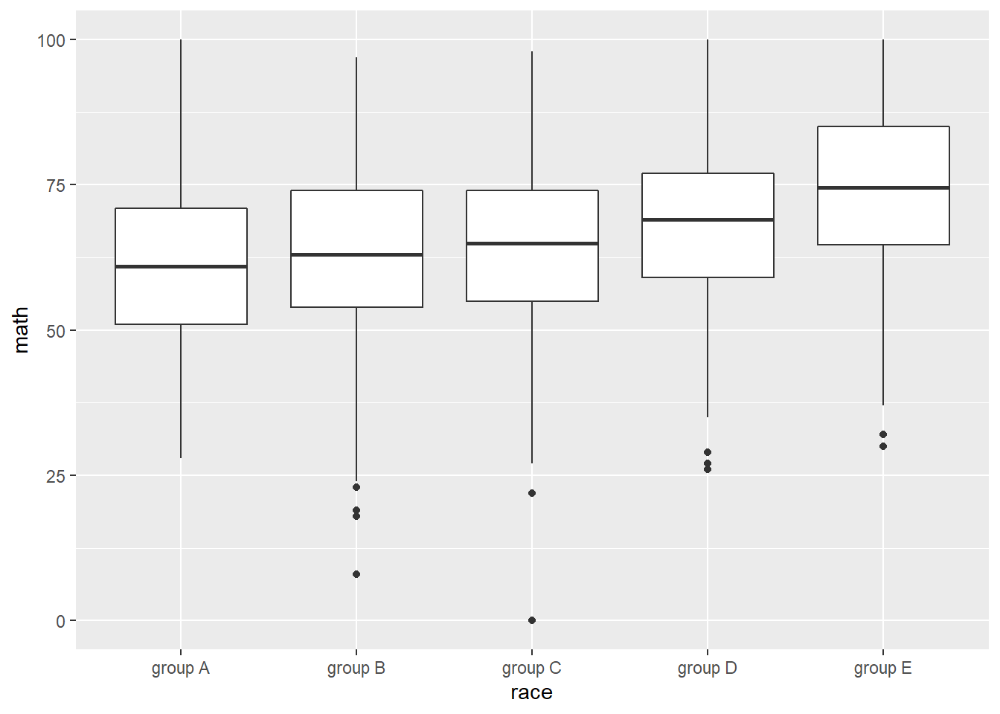
Parental level of education and math score.
performance %>%
ggplot(aes(pedu, math)) +
geom_boxplot() +
scale_x_discrete(limits = c('some high school', 'high school', 'some college', 'associate\'s degree', 'bachelor\'s degree', 'master\'s degree')) ## from low to high levels
Lunch quality and math score.
performance %>%
ggplot(aes(lunch, math)) +
geom_boxplot()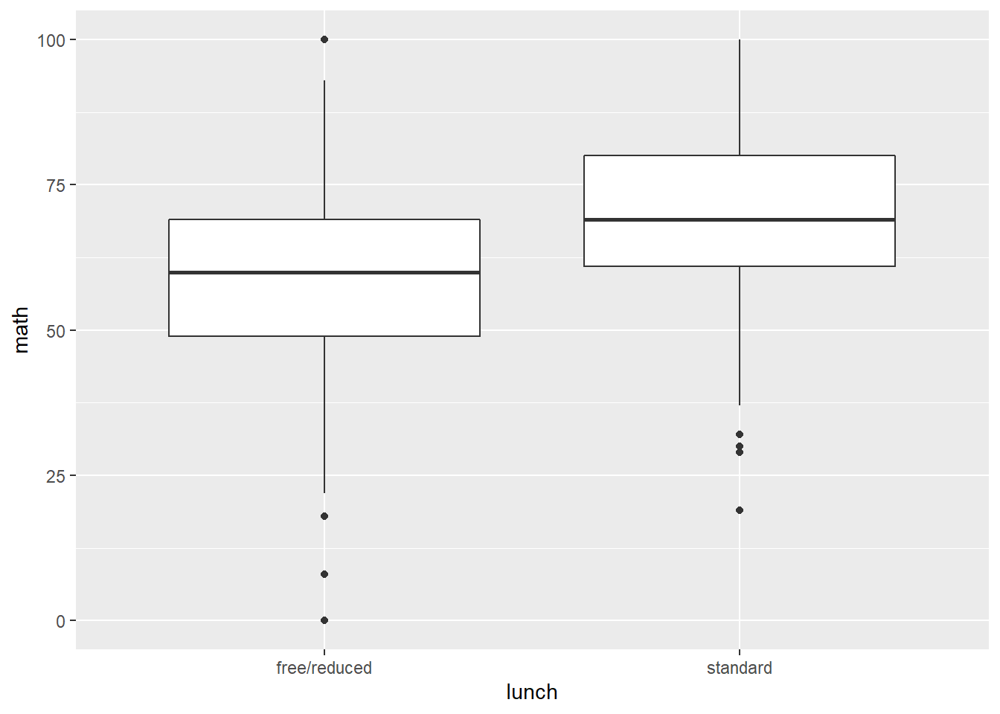
Test preparation course and math score.
performance %>%
ggplot(aes(pre, math)) +
geom_boxplot()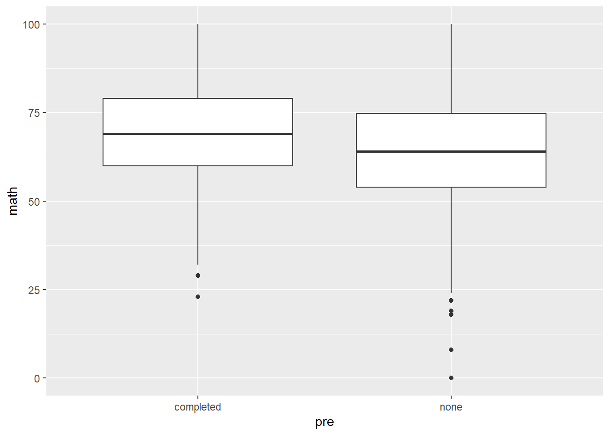
Histogram of math score.
performance %>%
ggplot(aes(math)) +
geom_histogram(binwidth = 5)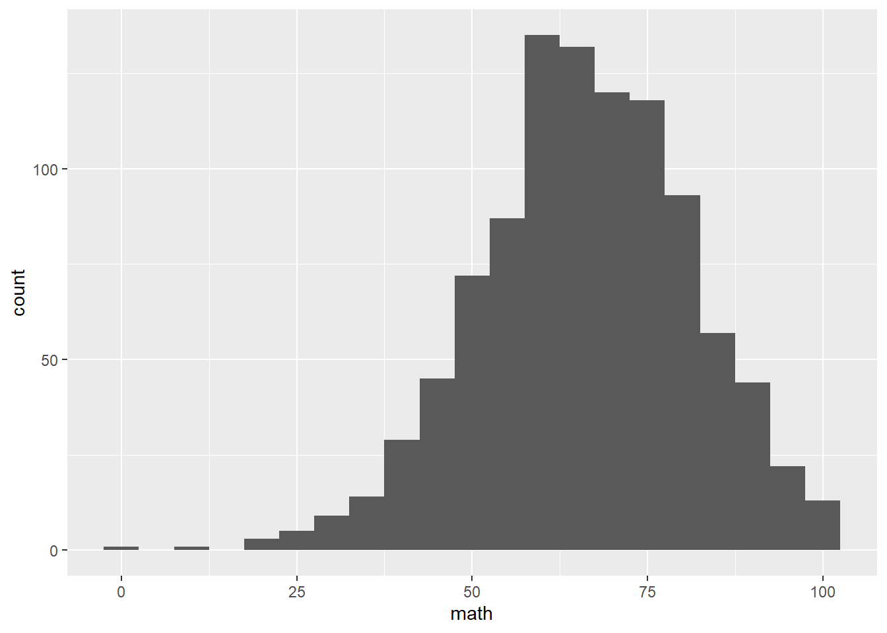
Linear regression model.
performance %>%
mutate(gender = ifelse(gender == 'male', 1, 0),
pre = ifelse(pre == 'completed', 1, 0),
lunch = ifelse(lunch == 'standard', 1, 0),
pedu = case_when(
pedu == 'some high school' ~ 1,
pedu == 'high school' ~ 2,
pedu == 'some college' ~ 3,
pedu == 'associate\'s degree' ~ 4,
pedu == 'bachelor\'s degree' ~ 5,
pedu == 'master\'s degree' ~ 6,
)) %>%
lm(math ~ gender + pre + lunch + pedu + race,
data = .) %>%
summary()##
## Call:
## lm(formula = math ~ gender + pre + lunch + pedu + race, data = .)
##
## Residuals:
## Min 1Q Median 3Q Max
## -49.633 -8.869 -0.105 9.267 31.154
##
## Coefficients:
## Estimate Std. Error t value Pr(>|t|)
## (Intercept) 45.5909 1.8047 25.262 < 2e-16 ***
## gender 4.9492 0.8384 5.903 4.89e-09 ***
## pre 5.6195 0.8716 6.448 1.77e-10 ***
## lunch 10.8994 0.8728 12.488 < 2e-16 ***
## pedu 1.6662 0.2875 5.796 9.11e-09 ***
## racegroup B 1.8897 1.6969 1.114 0.265707
## racegroup C 2.3755 1.5890 1.495 0.135234
## racegroup D 5.3573 1.6212 3.304 0.000986 ***
## racegroup E 10.1181 1.7975 5.629 2.36e-08 ***
## ---
## Signif. codes: 0 '***' 0.001 '**' 0.01 '*' 0.05 '.' 0.1 ' ' 1
##
## Residual standard error: 13.17 on 991 degrees of freedom
## Multiple R-squared: 0.2513, Adjusted R-squared: 0.2453
## F-statistic: 41.58 on 8 and 991 DF, p-value: < 2.2e-16How to interpret the results? what are the policies that can improve student math scores?